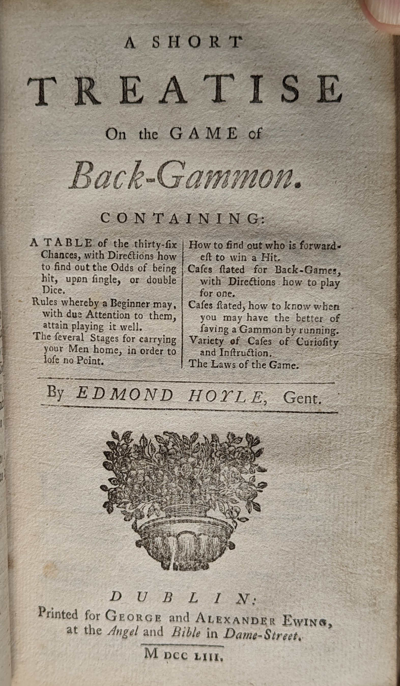

A Descriptive Bibliography of Edmond Hoyle
Copyright © 2014-26 by David Levy
(page updated 2025-03-28)User Guide
Backgammon.D.2*
A Short Treatise on the Game of Backgammon, printed for George and Alexander Ewing, second Dublin edition, 1753.
 |
Title: | A SHORT | TREATISE | On the Game of | Back-Gammon. | CONTAINING, | [11 lines to left of rule] A TABLE of the thirty-ſix | Chances, with Directions how | to find out the Odds of being | hit, upon ſingle, or double | Dice. | Rules whereby a Beginner may, | with due Attention to them, | attain playing it well. | The ſeveral Stages for carrying | your Men home, in order to | loſe no Point. | [11 lines to right of rule] How to find out who is forward-|eſt to win a Hit. | Caſes ſtated for Back-Games, | with Directions how to play | for one. | Caſes ſtated, how to know when | you may have the better of | ſaving a Gammon by running. | Variety of Caſes of Curioſity | and Inſtruction. | The Laws of the Game. | [rule] | By EDMOND HOYLE, Gent. | [rule] | [tailpiece] | [double rule] | DUBLIN: | Printed for George and Alexander Ewing, | at the Angel and Bible in Dame-Street. | [short rule] | M dcc liii. |
| Collation: | 12o: A–D8/4 [$½ signed]; 24 leaves, pp. [1–2] 3–47 [48] |
| Contents: | Signature (Page) Reference | Contents | Signature (Page) Reference | Running Titles |
| A1r (1) | title | |||
| A1v (2) | blank | |||
| A2r–D2r (3–43) | ‘[double rule] | A Short | TREATISE | On the GAME of | Back-Gammon. | [...]’ | |||
| D2v–D4r (44–47) | ‘[double rule] | An Alphabetical | TABLE | OF THE | CONTENTS. | [...]’ | |||
| D4v (48) | advertisements for piquet, whist, memory, quadrille with no prices |
| Publisher: | George and Alexander Ewing |
| Printer: | Richard Reilly (ornaments) |
| References: | ESTC T118621 |
| Copies Seen in Collections: | D [393.h3] (see Ewing.C); D [Dublin1761(21)] (see Ewing.D); L [1607/4733] (see Ewing.D); L [1607/528] (ECCO) (see Ewing.D); O [Jessel f.572] (see Ewing.C); O [Jessel f.574] (see Ewing.D); NvLN [GV1241.H86 1761] (see Ewing.D); NvLN [GV1469.B2 H6 1753] (see Ewing.D); OCl [789.87H F61D] (see Ewing.D); TNJ [GV1241.H8P 1752b c.1] (see Ewing.C); TNJ [GV1241.H8P 1752b c.2] (see Ewing.C); TNJ [GV1241.H8P 1761] (see Ewing.D); Levy [1745] (see Ewing.D); Levy [1804] (see Ewing.D) |
| Other Copies in Collections: | C [Hib.7.761.25] (see Ewing.D); HAG [KW 364 G 168] (see Ewing.D); LU-S [GV1241.H86 1761] (see Ewing.D); NNStJ [GV1241.H86 1761] (see Ewing.D); NNU-F [789.87H F61D] (see Ewing.D); NjP [GV1241.H86 1761] (see Ewing.D); RP [795 H868 1761 SpecColT] (see Ewing.D) |